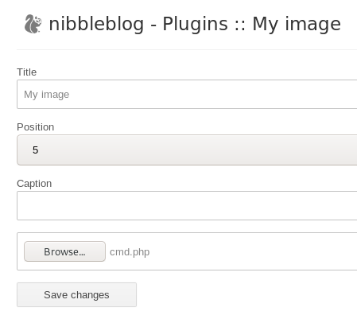

Linux Boxes
nibbles
nmap
http
gobuster
/admin
initial foothold
default credentials to nibbleblog admin
upload pic
OR upload cmd.php for RCE
reverse shell
privesc through monitor.sh file creation
vi monitor.sh
priv esc through rationallove kernel exploit
rationallove.c
user/root
lessons learned
OR upload cmd.php for RCE
we can also upload a system call written in php to get remote code execution on the server
<php echo system($_REQUEST['cmd']) ?>

run the script through the browser and we have code execution